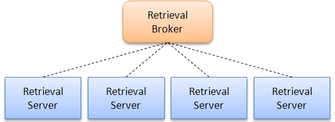

Introduction
This tutorial will take you through building an inverted index on the English portion of the ClueWeb09 collection (504m pages, 2.08 TB compressed, 13.4 TB uncompressed) and starting a server architecture to perform searches. We're assuming you have access to a reasonably-sized Hadoop cluster that is capable of holding the collection in uncompressed form. Since Ivory was designed to be scalable, the indexing process is basically the same as working with TREC disks 4-5; you might want to go through that guide first before tackling a multi-terabyte collection.
Ivory relies extensively on APIs for processing the ClueWeb09 collection provided in Cloud9, a MapReduce library for Hadoop developed at the University of Maryland: see this page dedicated to working with the ClueWeb09 collection. You'll want to start there.
Indexing the segments
In total, there are 503,903,810 pages in the English portion of the ClueWeb09 collection. The English data is distributed in ten parts (called segments), each corresponding to a directory. Here are the page counts for each segment:
ClueWeb09_English_1 50,220,423 pages ClueWeb09_English_2 51,577,077 pages ClueWeb09_English_3 50,547,493 pages ClueWeb09_English_4 52,311,060 pages ClueWeb09_English_5 50,756,858 pages ClueWeb09_English_6 50,559,093 pages ClueWeb09_English_7 52,472,358 pages ClueWeb09_English_8 49,545,346 pages ClueWeb09_English_9 50,738,874 pages ClueWeb09_English_10 45,175,228 pages
It's easiest to work with the collection as block-uncompressed SequenceFiles, so you'll want to first repack the distribution WARC files. There is an extensive guide in Cloud9 discussing this. So you'll want to use a program in Cloud9 for this:
hadoop jar ivory.jar edu.umd.cloud9.collection.clue.RepackClueWarcRecords /shared/ClueWeb09/collection.raw \ /shared/ClueWeb09/collection.compressed.block/en.01 1 /shared/ClueWeb09/docno-mapping.dat block
The first command-line argument is the base path of your ClueWeb09 distribution; the second is the output path; the third is the segment number (1 through 10); the fourth is the docno mapping data file; the fifth is "block" to specify block-level compression. You'll want to uncompress all 10 segments.
After that, you can use a driver program in Ivory to build an index on each segment. Sample invocation:
hadoop jar ivory.jar ivory.driver.BuildIndexClueWebEnglish \ /shared/ClueWeb09/collection.compressed.block/en.01 \ /shared/ClueWeb09/indexes/clue.en.01/ 1
The first command-line argument is the location of the source SequenceFiles containing the WARC records; the second is the location of the index; the third is segment number (one through ten). The cluster should fire up and start performing the indexing. Depending on the size of your cluster, this may take a while, or not very long at all. Of course, you'll have to index all ten segments.
The next step is to build a forward document index so you can actually examine retrieved results. There's a program in Cloud9 for doing this:
hadoop jar cloud9.jar edu.umd.cloud9.collection.clue.BuildClueWarcForwardIndex \ /shared/ClueWeb09/collection.compressed.block/en.01 /tmp/findex6/ \ /shared/ClueWeb09/collection.compressed.block/findex.en.01.dat
Once again, you'll have to do this for all ten segments.
Searching the collection
Ivory uses a standard architecture where a broker forwards queries to independent retrieval servers, each responsible for a partition of the collection (each partition is sometimes called a "shard"). See the figure below:

In the case of the ClueWeb09 collection, the segments provide natural document partitions. The query broker receives user queries (via a Web interface), forwards them to all the retrieval servers (in parallel), and merges the results. Here's the invocation for starting up the retrieval servers:
$ hadoop jar ivory.jar ivory.server.RunDistributedRetrievalServers /umd-lin/jimmylin/server_segment10_bm25.xml /tmp/config 09/11/18 22:04:50 INFO server.RunDistributedRetrievalServers: Reading configuration to determine number of servers to launch: 09/11/18 22:04:50 INFO server.RunDistributedRetrievalServers: - sid: ClueWeb09.en.segment01 09/11/18 22:04:50 INFO server.RunDistributedRetrievalServers: - sid: ClueWeb09.en.segment02 09/11/18 22:04:50 INFO server.RunDistributedRetrievalServers: - sid: ClueWeb09.en.segment03 09/11/18 22:04:50 INFO server.RunDistributedRetrievalServers: - sid: ClueWeb09.en.segment04 09/11/18 22:04:50 INFO server.RunDistributedRetrievalServers: - sid: ClueWeb09.en.segment05 09/11/18 22:04:50 INFO server.RunDistributedRetrievalServers: - sid: ClueWeb09.en.segment06 09/11/18 22:04:50 INFO server.RunDistributedRetrievalServers: - sid: ClueWeb09.en.segment07 09/11/18 22:04:50 INFO server.RunDistributedRetrievalServers: - sid: ClueWeb09.en.segment08 09/11/18 22:04:50 INFO server.RunDistributedRetrievalServers: - sid: ClueWeb09.en.segment09 09/11/18 22:04:50 INFO server.RunDistributedRetrievalServers: - sid: ClueWeb09.en.segment10 09/11/18 22:04:50 INFO server.RunDistributedRetrievalServers: Writing configuration to: /tmp/config/config-10.txt 09/11/18 22:05:29 INFO mapred.FileInputFormat: Total input paths to process : 1 09/11/18 22:05:34 INFO server.RunDistributedRetrievalServers: Waiting for servers to start up... 09/11/18 22:05:44 INFO server.RunDistributedRetrievalServers: ... 09/11/18 22:05:55 INFO server.RunDistributedRetrievalServers: ... 09/11/18 22:06:05 INFO server.RunDistributedRetrievalServers: ... 09/11/18 22:06:16 INFO server.RunDistributedRetrievalServers: ... 09/11/18 22:06:26 INFO server.RunDistributedRetrievalServers: ... 09/11/18 22:06:37 INFO server.RunDistributedRetrievalServers: ... 09/11/18 22:06:47 INFO server.RunDistributedRetrievalServers: ... 09/11/18 22:06:58 INFO server.RunDistributedRetrievalServers: ... 09/11/18 22:07:08 INFO server.RunDistributedRetrievalServers: ... 09/11/18 22:07:19 INFO server.RunDistributedRetrievalServers: ... 09/11/18 22:07:29 INFO server.RunDistributedRetrievalServers: ... 09/11/18 22:07:40 INFO server.RunDistributedRetrievalServers: ... 09/11/18 22:07:40 INFO server.RunDistributedRetrievalServers: All servers ready! 09/11/18 22:07:40 INFO server.RunDistributedRetrievalServers: Host information: 09/11/18 22:07:43 INFO server.RunDistributedRetrievalServers: sid=ClueWeb09.en.segment01, xxx.xxx.xxx.xxx:7001 09/11/18 22:07:46 INFO server.RunDistributedRetrievalServers: sid=ClueWeb09.en.segment02, xxx.xxx.xxx.xxx:7002 09/11/18 22:07:46 INFO server.RunDistributedRetrievalServers: sid=ClueWeb09.en.segment03, xxx.xxx.xxx.xxx:7003 09/11/18 22:07:49 INFO server.RunDistributedRetrievalServers: sid=ClueWeb09.en.segment04, xxx.xxx.xxx.xxx:7004 09/11/18 22:07:49 INFO server.RunDistributedRetrievalServers: sid=ClueWeb09.en.segment05, xxx.xxx.xxx.xxx:7005 09/11/18 22:07:49 INFO server.RunDistributedRetrievalServers: sid=ClueWeb09.en.segment06, xxx.xxx.xxx.xxx:7006 09/11/18 22:07:50 INFO server.RunDistributedRetrievalServers: sid=ClueWeb09.en.segment07, xxx.xxx.xxx.xxx:7007 09/11/18 22:07:53 INFO server.RunDistributedRetrievalServers: sid=ClueWeb09.en.segment08, xxx.xxx.xxx.xxx:7008 09/11/18 22:07:56 INFO server.RunDistributedRetrievalServers: sid=ClueWeb09.en.segment09, xxx.xxx.xxx.xxx:7009 09/11/18 22:07:56 INFO server.RunDistributedRetrievalServers: sid=ClueWeb09.en.segment10, xxx.xxx.xxx.xxx:7010
The first command-line argument is the path to a configuration file in HDFS. The second argument is the path of a temporary directory in HDFS. Here are two sample configuration files:
- docs/data/server_clue_segment10_bm25.xml: configuration file for launching a bm25 server.
- docs/data/server_clue_segment10_ql.xml: configuration file for launching a query-likelihood server.
In the index file, we specify the location of the inverted index as well as the forward index. In the output, you'll see the IP addresses of all the retrieval servers. This is basically doing the same thing as described in the guide to TREC disks 4-5, except we're launching 10 retrieval servers in parallel.
Here's the invocation for starting up the broker:
$ hadoop jar ivory.jar ivory.server.RunRetrievalBroker /tmp/config normalize 09/11/18 22:11:28 INFO server.RunRetrievalBroker: Starting retrieval broker... 09/11/18 22:11:28 INFO server.RunRetrievalBroker: server config path: /tmp/config 09/11/18 22:11:28 INFO server.RunRetrievalBroker: sid=ClueWeb09.en.segment01, host=xxx 09/11/18 22:11:28 INFO server.RunRetrievalBroker: sid=ClueWeb09.en.segment02, host=xxx 09/11/18 22:11:28 INFO server.RunRetrievalBroker: sid=ClueWeb09.en.segment03, host=xxx 09/11/18 22:11:28 INFO server.RunRetrievalBroker: sid=ClueWeb09.en.segment04, host=xxx 09/11/18 22:11:28 INFO server.RunRetrievalBroker: sid=ClueWeb09.en.segment05, host=xxx 09/11/18 22:11:28 INFO server.RunRetrievalBroker: sid=ClueWeb09.en.segment06, host=xxx 09/11/18 22:11:28 INFO server.RunRetrievalBroker: sid=ClueWeb09.en.segment07, host=xxx 09/11/18 22:11:28 INFO server.RunRetrievalBroker: sid=ClueWeb09.en.segment08, host=xxx 09/11/18 22:11:28 INFO server.RunRetrievalBroker: sid=ClueWeb09.en.segment09, host=xxx 09/11/18 22:11:28 INFO server.RunRetrievalBroker: sid=ClueWeb09.en.segment10, host=xxx 09/11/18 22:12:05 INFO server.RunRetrievalBroker: broker started! 09/11/18 22:12:20 INFO server.RunRetrievalBroker: broker ready at xxx.xxx.xxx.xxx:9999
The first command-line argument to the broker is the HDFS path where configuration information was written; the second parameter is "normalize", which means take the z-transform of individual document scores from individual segments when the broker merges results together from each retrieval server. When you fire up the broker, it returns a hostname:port, where you can access a simple search interface.
Finally, the following invocation will perform an ad hoc retrieval run using the broker:
hadoop jar ivory.jar ivory.smrf.retrieval.RunQueryBroker /tmp/config \ bm25-IF /umd-lin/jimmylin/queries_web09.xml /umd-lin/jimmylin/ranking.bm25.IF.txt
The first command-line parameter is the HDFS path where the configuration information was written; the second is the run tag; the third is query file; the final is the HDFS path of the output file.
And that's it!